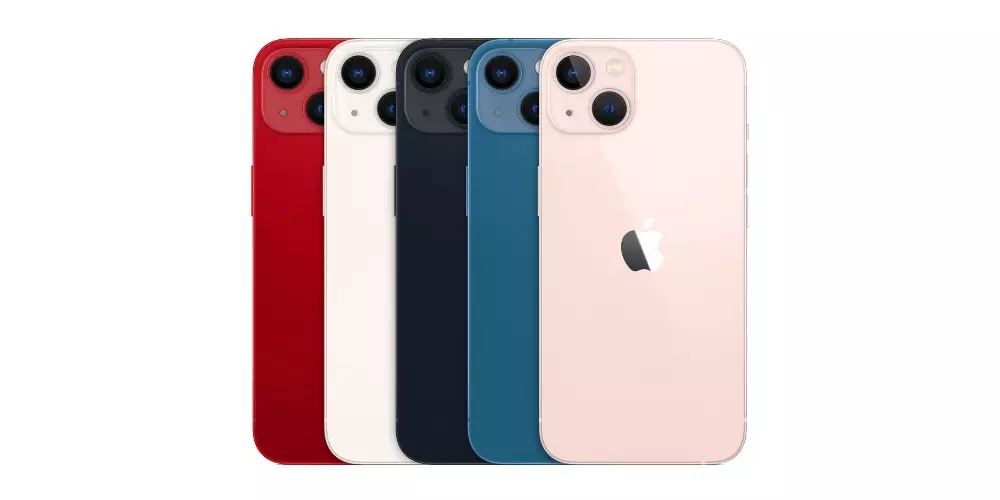
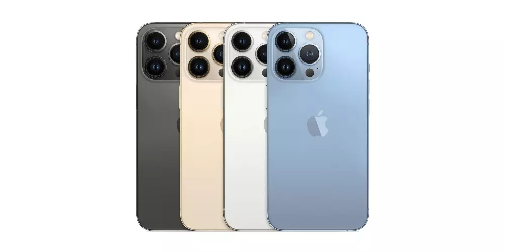

¿Cómo fue fundado el iPhone?
Todo comienza en el año 2004, hace cuatro años, cuando en Apple empiezan a darse cuenta que el logro que habían conseguido con el iPod podría tener los días
contados debido a la llegada al mercado de más y mejores smartphones que conseguían convencer a la gente para tener telefono y reproductor de música en un solo aparato. Steve
Jobs vio que los importantisimos ingresos que conseguian con el iPod e iTunes podrían verse muy reducidos, asi que decidieron ponerse en marcha para plantar cara en el mercado
que se avecinaba. No lo hacían por revolucionar la telefonía, sino para ganar dinero, como lo hacen todas las empresas, No nos engañemos.
La evolución
| Modelo de iPhone | Innovacion del modelo | Fecha de Salida |
|---|---|---|
| iPhone 2G | El primer modelo de iPhone contaba con una pantalla de 3.5 pulgadas, con opciones de almacenamiento de 4, 8 o 16 GB
contaba con 128 MB de memoria ram. Logró integrar, en un solo dispositivo, un teléfono móvil, un reproductor de música y
una conexión estable a internet a través de Wi-Fi.
|
Junio de 2007 |
| iPhone 3G | El orden de evolución del iPhone comenzó con el iPhone 3G, y como su nombre lo indica, incluía una conectividad 3G.
Era prácticamente una copia del anterior, pero con algunas diferencias importantes. En cuanto a diseño era un poco más
delgado y ahora contaba con un borde exterior metálico. No obstante, el gran cambio llegó con la inclusión del App Store
(en ese momento con muy pocas aplicaciones) y el A-GPS (GPS asistido).
|
Julio 2008 |
| iPhone 3Gs | Seguido, el iPhone 3GS fue la primera versión intermedia entre generaciones de iPhone se dio con el 3GS (por speed).
Con él, no hubo muchos cambios de apariencia, pero sí en hardware: se dobló el procesador y la memoria RAM. Aumentó la
capacidad a 32 GB. Tenía comandos de voz, brújula y cámara de 3 MP con autofoco y balance de blancos. Fue el primer iPhone
que grababa videos. Además, por primera vez, hubo un color diferente: el blanco.
|
Julio 2009 |
| iPhone 4 | Con este teléfono se dio un salto en potencia respecto al iPhone 3GS: fue más notable la evolución del sistema iOS, pues
estrenó la versión iOS 4, que incluía la multitarea, los fondos de pantalla en pantalla de inicio y la cámara trasera de 5 MP.
con flash LED y grabación HD (720p). Incorporó la primera cámara selfie VGA de iPhone.
Fue el último teléfono presentado al mundo por Steve Jobs antes de su muerte.
|
Julio 2010 |
| iPhone 4s | El iPhone 4S introdujo a Siri, el asistente personal de iOS. Ya contó con una cámara de 8 MP con 5 lentes grabación y edición
en Full HD (1080p).
|
Octubre 2011 |
| iPhone 5 | Se dice que el iPhone 5 fue el último teléfono diseñado por Steve Jobs. Y, en el 2018, se convirtió en un iPhone de colección:
ingresó a la lista de objetos vintage en Estados Unidos y obsoletos en el resto del mundo.
|
Septiembre 2012 |
| iPhone 5c y 5s | El iPhone 5C era prácticamente un iPhone 5, pero con cuerpo de plástico con una variedad de fundas de colores: azul, verde,
amarillo, rosa y blanco. Se trata de la primera vez en que Apple ofrece un modelo económico de su producto.
Seguido, el iPhone 5S, la evolución del iPhone 5, incorporó el sensor de huellas dactilares Touch ID, la cámara iSight
completamente rediseñada y el nuevo chip A7.
|
Septiembre 2013 |
| iPhone 6 y 6 Plus | Tras las críticas por su pequeña pantalla, Apple rediseñó sus dos nuevos celulares: el iPhone 6 y iPhone 6 Plus. El teléfono
adelgazó y creció, y además, se diseñó en dos tamaños: de 4,7 y de 5,5 pulgadas, respectivamente.
|
Septiembre 2014 |
| iPhone 6S y 6S Plus | Llega el 3D Touch Display Por estos años, la evolución del iPhone empezó a aplicar la continuidad como estrategia. Es decir, a presentar en su nueva generación, casi todos los atributos de la anterior, con leves mejoras. En ese sentido, un teléfono de la nueva colección podía llegar a ser exactamente igual a uno del anterior lanzamiento, pero con alguna mínima, pero significativa, diferencia en memoria, cámara o procesador.
|
Septiembre 2015 |
| iPhone SE, 7 y 7 Plus | El iPhone SE fue la evolución del iPhone 5S, pues tenía un diseño similar, pero con características iguales a un iPhone 6S.
Por otro lado, los iPhones 7 y 7 Plus llegaron ese mismo año, pero en septiembre, con bastantes características nuevas:
nuevos colores (negro mate y el negro brillante), más resistencia al agua (solo salpicaduras), sin el botón físico de home
(el cual fue reemplazado por sensor táctil que respondía con vibraciones) y el puerto de Jack 2.5 (que permitía conectar
audífonos). Durante ese mes, también lanzaron los AirPods.
|
Septiembre 2016 |
| iPhone 8, 8 Plus y X | Adiós al botón home, carga inalámbrica y desbloqueo facial
Apple cumplió 10 años en la evolución del iPhone, y en el 2017 lanzó los iPhone 8, 8 Plus y el esperado iPhone X, con el que la compañía
rindió homenaje la década cumplida. Según el portal La Manzana Mordida, especializado en Apple, aquel equipo significó el mayor cambio
de un iPhone, puesto que eliminó casi por completo los bordes, dejando un frontal en el que la pantalla OLED de 5,8 pulgadas es la auténtica.
|
Septiembre 2017 |
| iPhone Xs, Xs Max, Xr | La evolución del iPhone llegó a la generación X con las versiones XR, XS y XS Max. Por un lado, el iPhone XS era una versión levemente
mejorada del iPhone X. Tenían el mismo diseño, salvo que agregó el color dorado a las opciones. Por otra parte, el iPhone XS Max presentó,
hasta ahora, el mayor tamaño de los iPhone: medía 6,5 pulgadas.
Finalmente, el iPhone XR (el más económico del lanzamiento) fue el que quizá más llamó la atención, pues se parecía mucho al iPhone 5c
(2013), pero mejorado en materiales y, claramente, con tecnología y funciones avanzadas.
|
Septiembre 2018 |
| iPhone 11, 11 Pro, 11 Pro Max | el iPhone 11 heredó los atributos del taquillero iPhone XR con sus seis colores y la pantalla LCD, pero con propiedades de la gama Pro
(sin las tres cámaras). Sus dos cámaras contemplan el modo nocturno, el ultra gran angular y el procesamiento de fotos Deep Fusion.
Entre tanto, los iPhones 11 Pro y 11 Pro Max rompieron esquemas, puesto que ahora venían con tres cámaras: la teleobjetivo, gran angular y ultra angular.
|
Septiembre 2019 |
| iPhone 12 Mini, 12, 12 Pro, 12 Pro Max | Llegan las versiones ‘Mini’
Durante este momento de la evolución del iPhone, Apple decidió agregar las pantallas OLED a los cuatro modelos, además del famoso 5G y el chip A14 Bionic.
En esta gama, los diseños se alejan nuevamente de las curvas y optan por marcos rectos.
|
Septiembre 2020 |
| iPhone 13 Mini, 13, 13 Pro, 13 Pro Max | Los iPhone 13 y 13 mini fueron prácticamente un calco de los modelos anteriores, aunque eso sí, se produjo la primera reducción del notch desde 2017.
También mejoraron considerablemente el apartado de la batería, además de ampliar la capacidad mínima a 128 GB como hicieron el año pasado los modelos ‘Pro’.
Aunque al final su novedad más destacada fue la introducción del modo cine para vídeo, permitiendo crear impresionantes escenas propias de cine con desenfoque de fondo.
Aunque sobre todo, lo que más llamó la atención fue poder cambiar estos parámetros incluso cuando el vídeo ya ha sido grabado.
  |
Septiembre 2021 |
| iPhone 14, 14 Plus, 14 Pro, 14 Pro Max | La evolución que han tenido los iPhone 14 y 14 Plus la podemos resumir en la presencia de un nuevo modelo de 6,7 pulgadas que viene a sustituir a lo que
tendría que ser el iPhone 14 mini, es decir que Apple ha cambiado un modelo pequeño por uno grande. Sin embargo, a nivel de especificaciones el iPhone 14
es prácticamente el mismo equipo que el iPhone 13.
Por su parte, los modelos Pro si que suponen una evolución con respecto a los 13 Pro y 13 Pro Max. En primer lugar se elimina el notch, cambiando ahora a
la Dynamic Island que es una especia de isla donde se encuentran los sensores del Face ID y la cámara frontal. Esta isla, como su propio nombre indica,
es dinámica y se adapta a la interfaz de la app que se esté utilizando, incluso llega a ser interactiva
|
Septiembre 2022 |